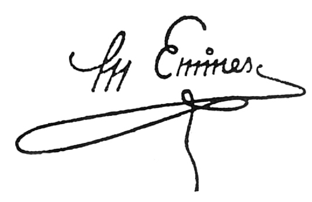

Luceafărul
A fost odată ca-n poveşti,
A fost ca niciodată.
Din rude mari împărăteşti,
O prea frumoasă fată.
Şi era una la părinţi
Şi mândră-n toate cele,
Cum e Fecioara între sfinţi
Şi luna între stele.
Din umbra falnicelor bolţi
Ea pasul şi-l îndreaptă
Lângă fereastră, unde-n colţ
Luceafărul aşteaptă.
Privea în zare cum pe mări
Răsare şi străluce,
Pe mişcătoarele cărări
Corăbii negre duce.
Îl vede azi, îl vede mâini,
Astfel dorinţa-i gata;
El iar, privind de săptămâni,
Îi cade draga fată.

Scrisoarea-I
Somnoroase_pasarele